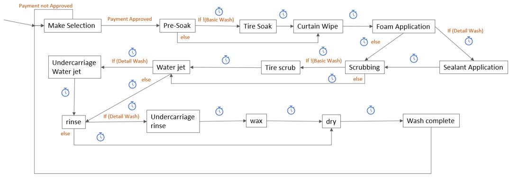
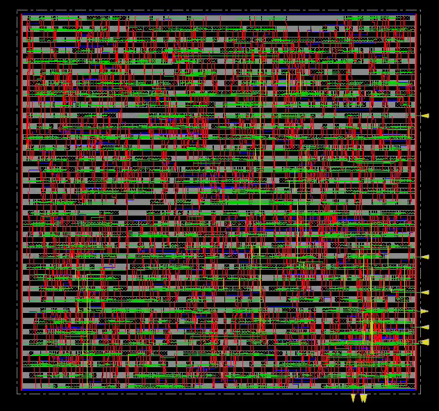

Carwash State Machine Asic
Project Description
The goal of this project was to create a complete layout for a design of choice from the logic deisgn and Verilog coding to the final placement and routing. I chose to create a design that simulates the operation of an automatic carwash system .
Design Process
Logic Design
In this stage I defined by functionlaity of my design and translated it into Verilog code. The Verilog code has three modules; a top-level module that goes through different stages of the wash based on the selection, a timer that counts down a fixed amount of time depending on what stage the carwash is in, and a Point of Sale (POS) module that received inputs and checks if the payment for the carwash service is valid. The state diagram is shown below, the timer symbol indicates there is a set amount of time that passes before the transition to the next state.

Standard Cell Library Layout
In this stage of the process the building blocks of the design known as cells are created and simulated using cadence virtuoso and HSPICE respectively. The cells designed for this project include: AOI211, AOI22, D-Flip Flop, Inverter, 2:1 Multiplexer, NAND2, NOR2, OAI21, and XOR2. Each cell is tested to ensure it passes the Design rule check which ensures the design is compatible with the 65nm process described in the global foundries handout and the layout vs Schematic check which ensures the layout has the same functionality as the schematic that we create. The cells created in this stage are shown below
Design Synthesis
Synthesis the process of translating the behavioral Verilog code into a gate level netlist that can be implemented into a physical chip. Using the Synopsys tool, the process is quick and easy provided the cells were characterized correctly using SiliconSmart to generrate a cell library and the Verilog code is free from errors.After this stage, the verilog code that was once made up of behavioral verilog statements like always, if and else etc, has now been translated into equaivalent expressions made from the cells in the standard cell libraries NAND2, NOR2 etc.
Placement and Routing
This is the step where it all comes together, the netlist generated from the synthesis step is implemented using the cell designed in the Standard cell library design step. After importing the design into placement and routing tool; Innovus, the locations, shape and sizes of the design are determined in the floorplan, then rings for connecting the power and ground nets are added around the perimeter before the final placement and route steps. Below is the complicated looking layout! good thing I didn't have to do it by hand :D

Testing
This is where we make sure the cell works by passing the design rule check, layout vs schematic check and running a HSPICE simulation to ensure it functions exactly as we want it to.
Skills and Software Used
- Verilog
- Cadence Virtuoso
- Cadence Innovus
- Design Vision
- Primetime
- Silicon Smart